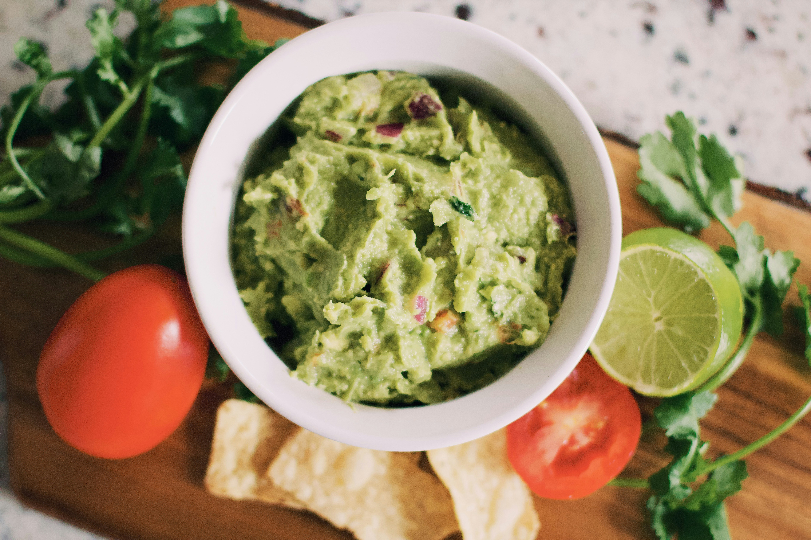

guacamole
HOME

Fresh Homemade Guacamole
A creamy, refreshing dip made with ripe avocados, lime juice, and fresh vegetables, delivering the perfect balance of flavor and texture.
Ingridients
- 3 ripe avocados
- 1 small tomato, diced
- ¼ cup red onion, finely chopped
- 1 lime, juiced
- 2 tbsp fresh cilantro, chopped
- 1 small jalapeno, finely chopped (optional)
- ½ tsp salt
- ¼ tsp black pepper
Steps
- cut and scoop the avacados
- mash the avacadoes
- add all the sliced ingredients
- pour in the lime juice
- mix everything together
- taste and adjust seasoning